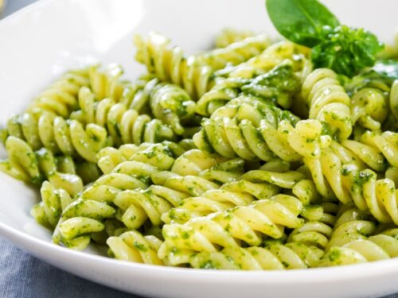

Pesto Pasta

My favorite dish to prepare after a long day of work
This top-rated pesto pasta recipe, which comes together in just 15
minutes, is the perfect quick and easy weeknight dinner.
This versatile pesto pasta recipe is easy to customize by adding your
favorite protein, if you like. Chicken, sausage and chickpeas are all
delicious mix-ins.
Ingredients
- Pasta
- Onion and oil
- Pesto
- Salt and pepper
- Cheese
Steps
- Boil the pasta in salted water and drain
- Cook the onion in oil, then stir in the pesto and seasonings
- Add the pesto mix to the hot pasta and toss with cheese